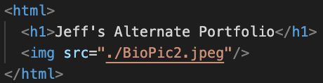

Create a GitHub account and add a Repository named “username”.github.io (Eg. jefejuell.github.io)
To create the repository, click on the Repository tab and click the New button
In VS Code software create a folder using the “Folder +” icon, and then create a file in the new folder (use File + icon) titled “index.html”
Note: This index.html file can also be created within your newly created Github repository.
Add the following code in the index.html file (for a basic header and image):

Click File > Save or use Command+S to save the index.html file
In MacOS finder or Windows explorer, copy a picture (that has the identical filename in your index.html code) into the same folder that you’ve created in VSCode.
Add these two files to your github repository (Eg. jefejuell.github.io)
To do this, open the Code tab in your repository and click on the Add file icon and then select Upload files.
You can then either Drag and Drop them or click choose your files.
Scroll down to the Commit changes section and add a title for the action
Note: You may also add an extended description if you end up making edits to the file.
Click on the Commit changes button.
Github will process your files.
Test your new webpage by typing “username”.github.io into any browser. (eg. jefejuell.github.io)
The page header (h1 code) and image should appear properly. If they don’t check to be sure that image filenames are identical, including the file extension.